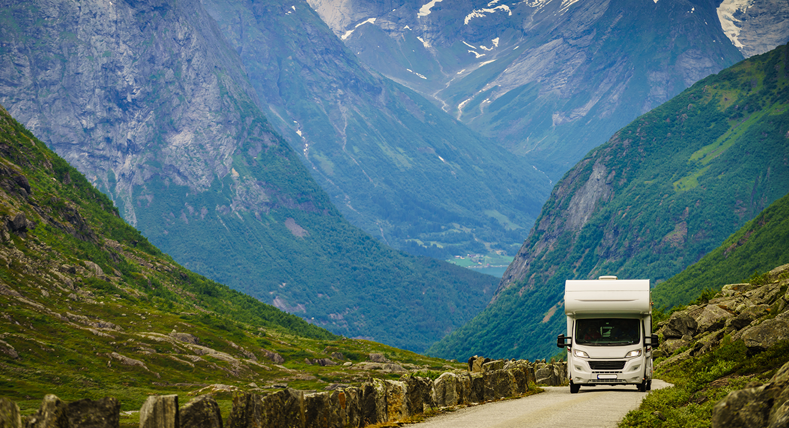

Become a
Become a
Van-Dweller
Van-Dweller— A person who embraces van-life, an unconventional lifestyle of living in a car, van or other motor vehicle. Van-dwelling can be on a part-time or full-time bases. People who live this way by choice are typically seeking a more self-sufficient lifestyle characterized by freedom and mobility.
#VanLife
Join the Adventure